id="js_content" style="">同学聚会上，大家吃吃喝喝后，便各自抱起手机低头刷刷刷。
互联网时代，人们似乎失去了与别人面对面交流的能力和欲望。
可事实上，人们交流表达的需要一直存在，只不过现代人将它们都放在了互联网上。
微博、朋友圈、B站、论坛、抖音、网易云等，总有一款适合你，总有一个地方你可以大肆地宣泄自己的情绪，可以大声地表达自己的想法。
如今，要真正了解一个人，你很难从他“心如死水”的外表和“佛系油腻”的话语中看出什么。
倒不如翻一下他的朋友圈和微博反而来得更快。
甚至，如果你能获得他在虾米或者网易云上的歌单，你都能在对方还不自觉自己有问题的情况下，觉察到他的抑郁倾向。
总之，现代人能够在互联网上找到属于自己的更私密的、更好玩的、更交互的表达、沟通方式。
同时他们在某种程度上也在互联网的海洋里裸奔，人们内心的丑陋、脆弱、渴望以及所有的秘密都公开隐匿在互联网的各个碎片中。
当你将身边人的这些碎片拼凑起来时，眼前这个人一定会让你既惊讶又吃惊：原来我并不了解他！
于是，今年口碑、票房爆棚的黑马电影《网络迷踪》诞生了。
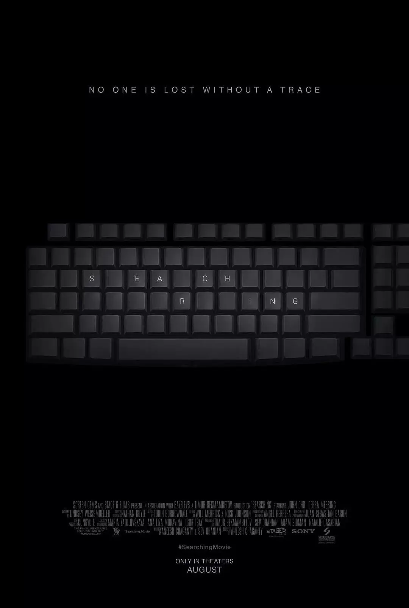
豆瓣五万多人评价，评分高达8.7，这种盛况直逼前一阵子的悬疑片《看不见的客人》。
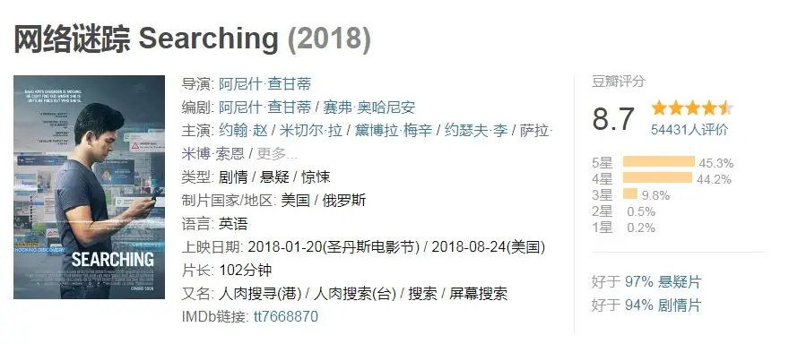
满屏电脑桌面、监控录像、对话框。
google、twitter、youtube、youcast、Tumblr成为主要电影场景和破案现场，鼠标成为最佳配角。
电影看下来，像是上了一个多小时的网。
如此独特新颖的表现方式，却拍出了到处是伏笔、反转反转再反转的悬疑片，背后的情感线索更是戳人泪点、引人深思。
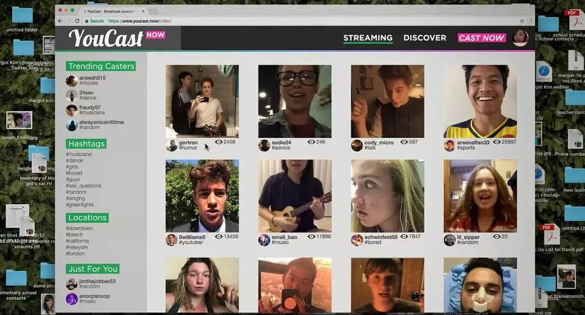
-01-
美国 韩裔 三口之家
大卫.金有一个漂亮贤惠的妻子和一个可爱的女儿玛戈。
他们在电脑上记录着一家人的快乐时光：玛戈第一次上学，玛戈和妈妈一起上的第一节钢琴课、大卫送给玛戈一件宝可梦T恤、一家人嬉戏、打闹、旅游....
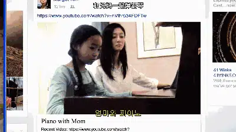
接着妻子查出患有淋巴瘤，大卫陪妻子一起锻炼身体抵抗病魔，可妻子最后还是撒手而去，只剩下大卫和玛戈。
电影刚开始便用几分钟很快地交代这个家庭发生了什么，照片、视频这些伪记录方式则极强地将观众代入到这个故事中。
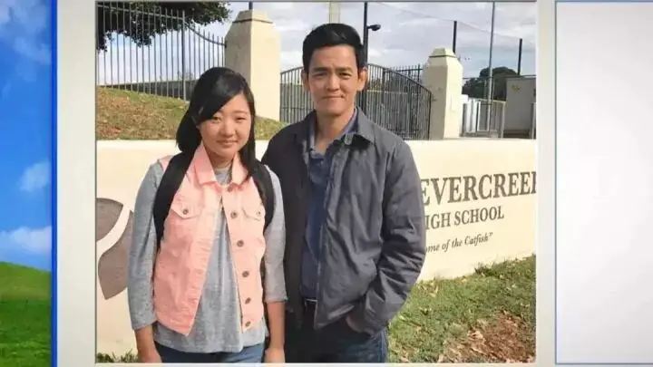
接着，大卫与进入高中的玛戈在iMessage上聊天，大卫指责玛戈不倒垃圾，然后询问了玛戈的考试成绩和今天的安排。
女儿告诉大卫，因为下周有生物课期末考试，今晚要参加学习小组可能要通宵复习。
大卫打字欲言又止、玛戈随意不上心的回答，我们都能从中感受到两人之间存在着隔阂。
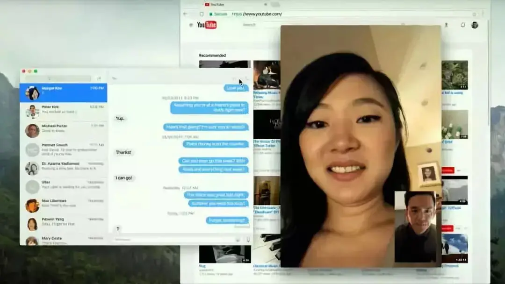
而就在这一晚，玛戈却出事了！
深夜里，玛戈给大卫三次来电，可是熟睡的大卫并没有接到来电。
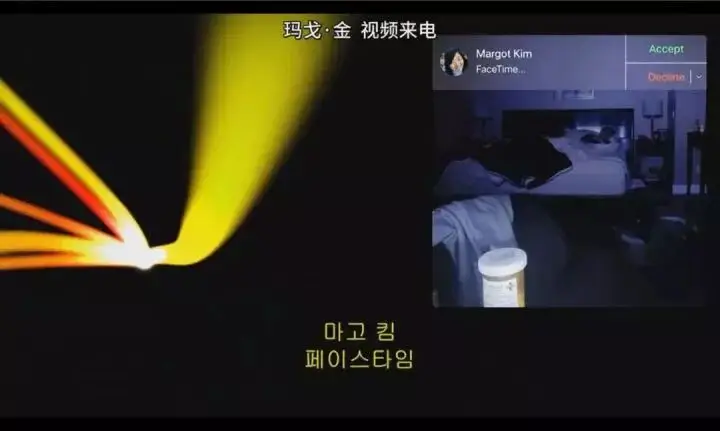
第二天凌晨，当大卫联系玛戈时，却始终无人接听。
大卫心存侥幸等着女儿的回电，可是始终没有任何消息。
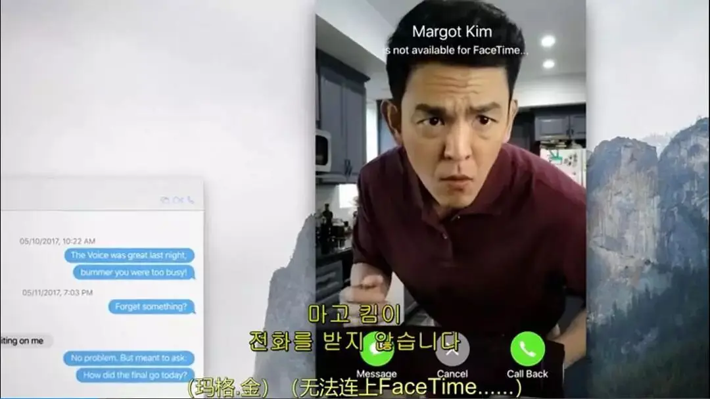
大卫越想越害怕，便向警察报案，警方派出维克警探来处理本案。
虽然有警察帮忙，大卫仍然心急如焚，想要从女儿的电脑和社交软件中找到线索。
随着一步步抽丝剥茧，“一个熟悉的陌生人”逐渐出现在大卫面前。
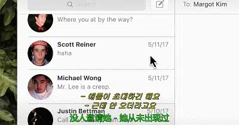
女儿并不是大卫印象中的社交达人，当大卫与她三百多个twitter好友一一联系时。
大卫才发现，虽然有这么多好友，可是她没有一个真正的朋友，没有人关心玛戈在哪里，也没有人表现出担心和害怕。
大卫从这些人口中得知女儿常常独自一人，非常孤僻。
女儿也不是个乖乖女，玛戈欺骗了大卫，那一晚她并不是通宵复习，而是很早便离开了学习小组并不知所踪。
那天下午她也没有上钢琴课。
而早在半年之前，玛戈便将钢琴课退了，可她从没有告诉大卫。
甚至警察还查到玛戈伪造了身份证，并将半年来上钢琴课的钱存入了假身份注册的银行账号。
种种迹象令人匪夷所思。
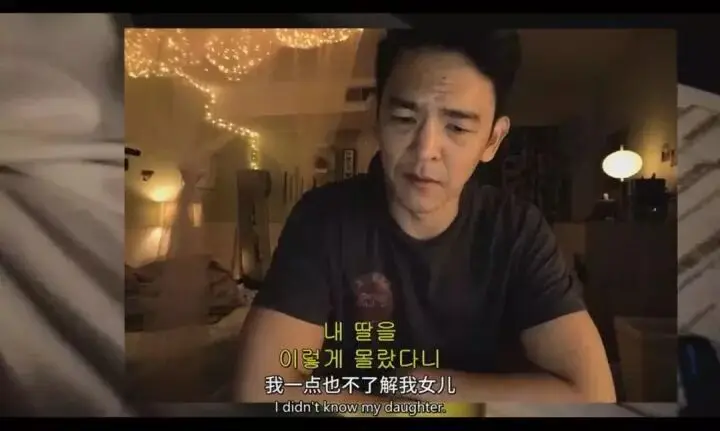
而更让大卫绝望的是网络暴力和各种恶心的嘴脸。
之前表示和女儿关系一般的同学，为了蹭热点圈粉在镜头面前痛哭流涕，表示非常担心玛戈的处境。
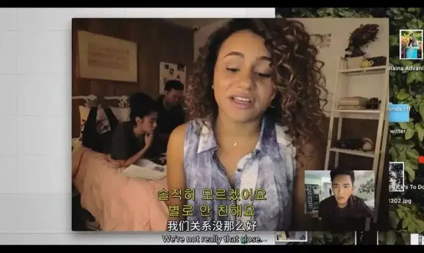
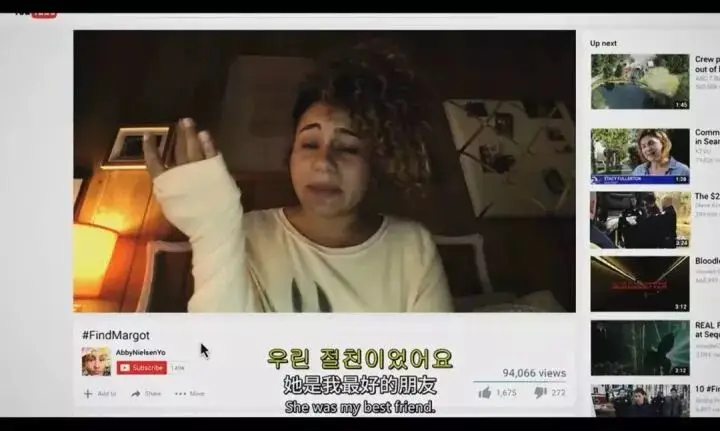
还有人则对女儿出言相辱。
就连大卫也不放过，很多键盘侠认为是大卫失职，还p图嘲笑这位早已失魂落魄、无比自责的父亲。
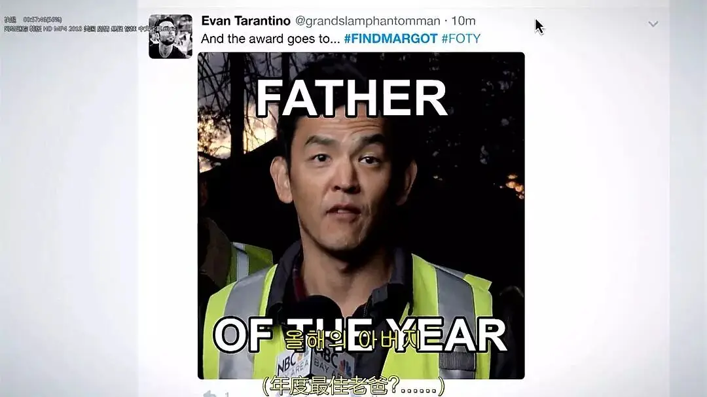
甚至，在还没有找到女儿尸体的情况下，很多人已经断言玛戈生还的希望基本为零，就是大卫的邮箱中，都收到了殡葬公司的广告邮件。
这些场景多么熟悉！
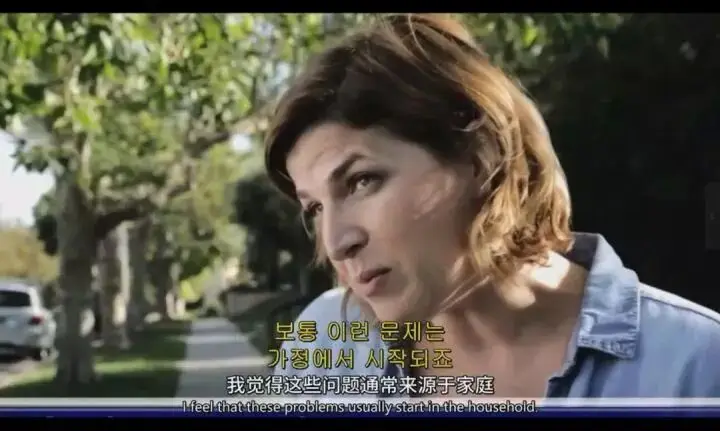
-02-
这样的桌面电影并非首创，此前的《解除好友：暗网》就让观众领略到了屏幕叙事的魅力。
相比《解除好友》，除去此片扎实的故事创作，导演对于屏幕叙事的挖掘和发挥更是登峰造极。
首先，《网络迷踪》最大程度地发挥了录屏、聊天对话框、摄像头画面本身具有的纪实性。
抖动的视频聊天、熟悉的社交软件、google搜索，这些都在拉近电影与现实之间的距离。
而“让观众感到真实”是走入观众内心的第一步，也是最重要的一步。
为此，电影涉及到的媒介都是现实真实存在的。
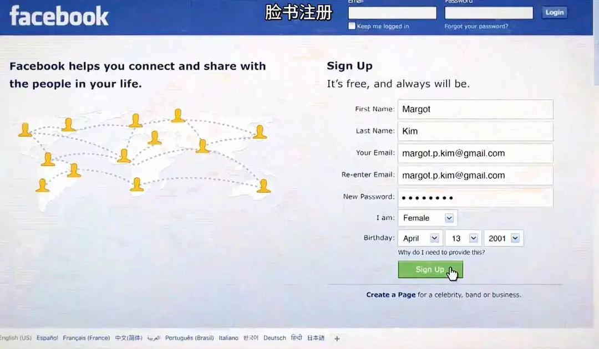
而为了让画面完美匹配故事本身的节奏，两位剪辑师花了两年的时间才完成了这项巨大的工程，而电影的拍摄却只用了不到半个月的时间。
这就是这部电影的厉害之处，人物在慌乱时和在沉思时的打字速度和浏览网页的方式是完全不同的，《网络迷踪》通过剪辑和演员表演完美匹配了故事本身的张力和节奏。
其次，“隔着屏幕”本身会给人无限想象和韵味。
在以往的作品中，一个演员会用欲言又止的方式来表达复杂的情绪，而本片则通过对话框便可以实现。
当大卫从别人口中得知玛戈可能和一个男生到山上露营时，大卫非常愤怒，他情绪激动，打了一大段文字来表达自己对于女儿的不满和受伤。
可当他准备发送时，却犹豫再三，最终把一整段文字全部删掉，只是留下一句“等你看到了消息联系我”。
虽然没有看到大卫的表情，可仅仅从这个对话框，我们完全可以感受到一个父亲面对女儿犯错时的那种复杂情感。
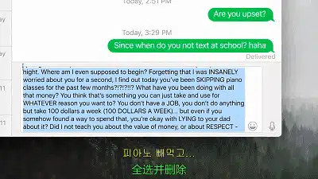
这样的表现方式还有很多，比如当大卫每次和女儿聊天准备提到妈妈时，对话框总是会迟疑，大卫也总是会将“妈妈”删去。
他太想念妻子，并不想要在女儿面前揭开这个伤疤。
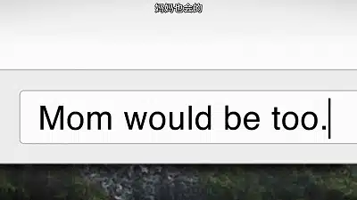
这种想象和脑补不仅可以为情感留白，还很自然地制造了很多细思极恐的伏笔和破案线索。
原来真相一直在那里，它只是被杂草挡住了视线！
-03-
本片最感人至深的是深埋其中的情感线索，随着真相浮出水面，隐匿在主人公心底里最柔软、最脆弱的情感也逐渐暴露而出。
玛戈的确不是一个乖乖女，但仍然是爸爸妈妈的女儿，她最挂念的就是逝去的母亲。
钢琴曾是玛戈的最爱，因为有妈妈的一直陪伴。
可是自从妈妈去世，有着和妈妈最多回忆的钢琴便成为了玛戈心中难言的痛。
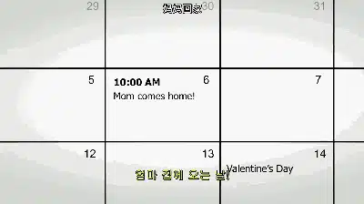
这种痛苦玛戈只能独自承担，无法向爸爸诉说，因为自从妈妈去世后，爸爸绝口不再提妈妈。
甚至爸爸都不曾记起妈妈的生日，这让玛戈很失望，她也因此变得孤僻、抑郁。
而对于大卫，他之所以不愿意在孩子面前提起妻子，是因为他觉得时间能够冲淡死亡的阴霾，他在以一种大男子的方式面对妻子的逝去。
于是，两人因此产生了最深的隔阂和误会，即使大家都在深深地想念着妈妈。
因此，爱中需要沟通，更需要接受和面对发生在身边的一切。
即使面对的是死亡！
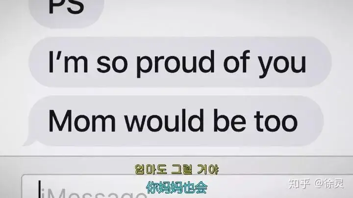
今天李咏去世的消息刷遍了朋友圈，有人感慨万千后继续吃吃喝喝，有人则灌碗鸡汤将各种防癌文章收藏起来。
其实，防得了癌症，你就可以避免死亡么。
死亡一直如影而行，它在我们的左边、右边、上边、下边、前面和后面。
对于我们，可以盼望的不是掩耳盗铃般蒙住自己的眼睛，也不是悲观绝望充满恐惧。
而是在死亡的左边、右边、上边、下边、前面和后面都能发现上帝那深沉的声音。
那里有战胜死亡的盼望和平安。

这里没有挑逗你眼目情欲的小鲜肉
也没有挑动你肉体情欲的段子
更没有膨胀你今生骄傲的鸡血
我们只在乎那些最质朴真诚的作品
在那里我们才能恢复真正的想象力
我们也坚信这才是我们真正需要的

ID:Six_hundred_hits
长按二维码，一键关注
【六百击】
-END-
电影评论
尽情分享朋友圈

苹果打赏通道
小提示：文末广告是腾讯配送广告，内容与本号无关，但您的每次点击（无需反复点）都会给平台带来几毛收益，欢迎您点击支持六百击。